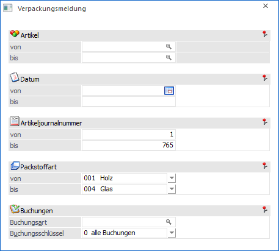

Die Verpackungsmeldung kann über den Menüpunkt…
1 WinLine FAKT
1 Auswertungen
1 Verpackung
1 Verpackungsmeldung
… aufgerufen werden. Die Verpackungsmeldung weist die automatisch aus der Belegbearbeitung errechneten Verpackungsentgelte pro Packstoffart aus.
Hinweis
Nur wenn die Colli meldepflichtig sind, werden die jeweils zugewiesenen Packstoffarten an dieser Stelle ausgewiesen. Des Weiteren erfolgt eine Ausgabe einer Packstoffart nur, wenn der Ausgabewert positiv ist.

Für die Ausgabe der Auswertung stehen folgende Felder zur Verfügung:
Ø Artikelnummer von / bis
An dieser Stelle kann nach den Artikelnummern selektiert werden, welche in die Auswertung miteinbezogen werden sollen.
Ø Datum von / bis
Hier kann eine Eingrenzung des Auswertezeitraumes erfolgen.
Ø Artikeljournalnummer von / bis
In diesen Feldern erfolgt die Eingrenzung des Auswertebereichs nach der Artikeljournalnummer (ähnlich der PrimaNota Nummer in der Finanzbuchhaltung).
Ø Packstoffart von / bis
An dieser Stelle kann eine Selektion auf die Packstoffarten erfolgen.
Ø Buchungsart
Im Eingabefeld "Buchungsart" kann die Auswertung auf eine bestimmte Buchungsart eingegrenzt werden.
Ø Buchungsschlüssel
Aus der Auswahlliste kann auf einen bestimmten Buchungsschlüssel eingeschränkt werden. Soll keine Einschränkung erfolgen, so muss an dieser Stelle die Variante "0 - alle Buchungen" gewählt werden.
Buttons

Ø Ausgabe Bildschirm
Mit Hilfe des Buttons "Ausgabe Bildschirm" oder der Taste F5 wird die Auswertung am Bildschirm ausgegeben.
Ø Ausgabe Drucker
Durch Anwahl des Buttons "Ausgabe Drucker" wird die Auswertung am Drucker ausgegeben.
Ø Ende
Durch Anwahl des Buttons "Ende" bzw. der Taste ESC wird die Auswertung geschlossen.